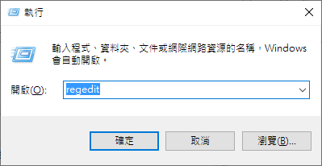
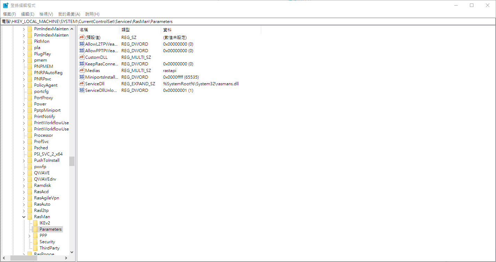
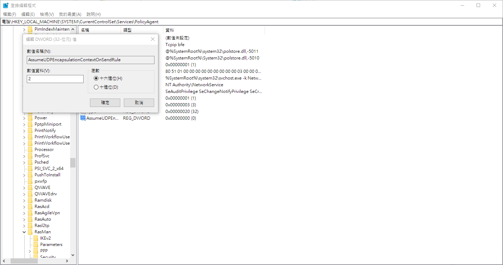
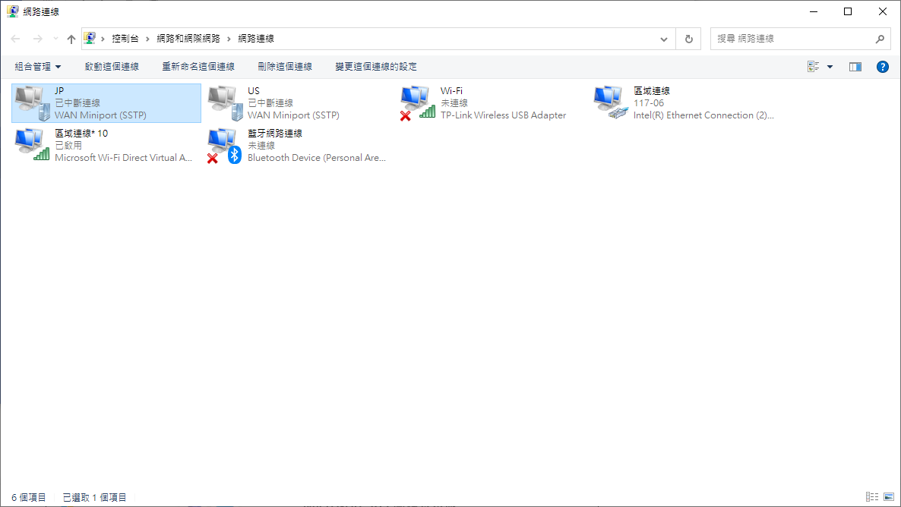
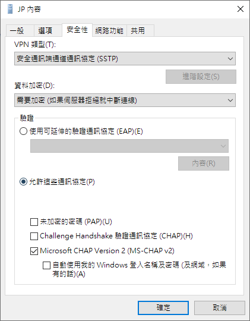

<!DOCTYPE HTML>
<html lang="zh-TW">

<head><meta name="generator" content="Hexo 3.8.0">
    <!--Setting-->
    <meta charset="UTF-8">
    <meta name="viewport" content="width=device-width, user-scalable=no, initial-scale=1.0, maximum-scale=1.0, minimum-scale=1.0">
    <meta http-equiv="X-UA-Compatible" content="IE=Edge,chrome=1">
    <meta http-equiv="Cache-Control" content="no-siteapp">
    <meta http-equiv="Cache-Control" content="no-transform">
    <meta name="renderer" content="webkit|ie-comp|ie-stand">
    <meta name="apple-mobile-web-app-capable" content="Linsly 的小日子">
    <meta name="apple-mobile-web-app-status-bar-style" content="black">
    <meta name="format-detection" content="telephone=no,email=no,adress=no">
    <meta name="browsermode" content="application">
    <meta name="screen-orientation" content="portrait">
    <meta name="theme-version" content="1.3.0">
    <meta name="root" content="/">
    <link rel="dns-prefetch" href="https://bvbnjghui.github.io">
    <!--SEO-->

<meta name="keywords" content="windows,VPN">


<meta name="description" content="原因問題發生原因可以參考這篇:configure-l2tp-ipsec-server-behind-nat-t-device (英文)有興趣可以了解看看，這裡主要提供解決方案
解決辦法修改登錄檔...">


<meta name="robots" content="all">
<meta name="google" content="all">
<meta name="googlebot" content="all">
<meta name="verify" content="all">
    <!--Title-->

<title>
    
    win11 無法連上 NAS VPN 的解決方法 |
    
    Linsly 的小日子
</title>

<link rel="alternate" href="/atom.xml" title="Linsly 的小日子" type="application/atom+xml">


<link rel="icon" href="/favicon.ico">

    

<link rel="stylesheet" href="/css/bootstrap.min.css?rev=3.3.7">
<link rel="stylesheet" href="/css/font-awesome.min.css?rev=4.7.0">
<link rel="stylesheet" href="/css/style.css?rev=@@hash">
    


    

</head></html>
<!--[if lte IE 8]>
<style>
    html{ font-size: 1em }
</style>
<![endif]-->
<!--[if lte IE 9]>
<div style="ie">你使用的浏览器版本过低，为了你更好的阅读体验，请更新浏览器的版本或者使用其他现代浏览器，比如Chrome、Firefox、Safari等。</div>
<![endif]-->
<body>
    <header class="main-header" style="background-image:url(
    /./img/skyfire_arknights.jpg)">
    <div class="main-header-box">
        <a class="header-avatar" href="/" title="Linsly">
            
        </a>
        <div class="branding">
            <!--<h2 class="text-hide">Snippet主题,从未如此简单有趣</h2>-->
            
            <h2>
                今天午餐吃什麼
            </h2>
            
        </div>
    </div>
</header>
    <nav class="main-navigation">
    <div class="container">
        <div class="row">
            <div class="col-sm-12">
                <div class="navbar-header"><span class="nav-toggle-button collapsed pull-right" data-toggle="collapse" data-target="#main-menu" id="mnav">
                        <span class="sr-only"></span>
                        <i class="fa fa-bars"></i>
                    </span>
                    <a class="navbar-brand" href="https://bvbnjghui.github.io">
                        Linsly 的小日子</a>
                </div>
                <div class="collapse navbar-collapse" id="main-menu">
                    <ul class="menu">
                        
                        <li role="presentation" class="text-center">
                            <a href="/"><i class="fa "></i>
                                首頁</a>
                        </li>
                        
                        <li role="presentation" class="text-center">
                            <a href="/archives/"><i class="fa "></i>
                                时间轴</a>
                        </li>
                        
                    </ul>
                </div>
            </div>
        </div>
    </div>
</nav>
    <section class="content-wrap">
        <div class="container">
            <div class="row">
                <main class="col-md-8 main-content m-post">
                    <p id="process"></p>
<article class="post">
    <div class="post-head">
        <h1 id="win11 無法連上 NAS VPN 的解決方法">
            
            win11 無法連上 NAS VPN 的解決方法
            
        </h1>
        <div class="post-meta">
    
    <span class="categories-meta fa-wrap">
        <i class="fa fa-folder-open-o"></i>
        <a class="category-link" href="/categories/系統設定/">系統設定</a>
    </span>
    
    
    <span class="fa-wrap">
        <i class="fa fa-tags"></i>
        <span class="tags-meta">
            
            <a class="tag-link" href="/tags/VPN/">VPN</a> <a class="tag-link" href="/tags/windows/">windows</a>
            
        </span>
    </span>
    
    
    
    <span class="fa-wrap">
        <i class="fa fa-clock-o"></i>
        <span class="date-meta">
            2022/05/13</span>
    </span>
    
    
</div>
        
        
    </div>
    
    <div class="post-body post-content">
        <h2 id="原因"><a href="#原因" class="headerlink" title="原因"></a>原因</h2><p>問題發生原因可以參考這篇:<br><a href="https://docs.microsoft.com/en-US/troubleshoot/windows-server/networking/configure-l2tp-ipsec-server-behind-nat-t-device" target="_blank" rel="noopener">configure-l2tp-ipsec-server-behind-nat-t-device (英文)</a><br>有興趣可以了解看看，這裡主要提供解決方案</p>
<h2 id="解決辦法"><a href="#解決辦法" class="headerlink" title="解決辦法"></a>解決辦法</h2><p>修改登錄檔(註冊表)，然後設定 VPN 的數據協議：</p>
<ol>
<li><code>win + R</code>，執行<code>regedit</code><br></li>
<li>找到 <code>HKEY_LOCAL_MACHINE\SYSTEM\CurrentControlSet\Services\PolicyAgent</code><br></li>
<li><p>修改 <code>AssumeUDPEncapsulationContextOnSendRule</code> 數值為 <code>2</code> ，如果沒有找到就新增 <code>DWORD(32位元值)</code><br></p>
</li>
<li><p>找到<strong>網路設定</strong> - <strong>介面卡設定</strong>，右鍵-內容<br></p>
</li>
<li>設定 <strong>安全性</strong> - <strong>資料加密</strong> 為：<strong>需要加密（如果伺服器拒絕就中斷連線）</strong>；下面 <strong>允許這些通訊協定</strong>，只勾選 <code>Microsoft CHAP Version 2(MS-CHAP v2)</code><br></li>
<li>重新開機</li>
</ol>
<p>個人執行完以上步驟就能正常連線，還是連不上可以嘗試後續步驟： <em><a href="https://www.huluohu.com/posts/202110122349/" target="_blank" rel="noopener">解决Win11连接群晖上的L2TP类型vpn无响应的问题</a></em></p>

    </div>
    
    <div class="post-footer">
        <div>
            
            轉載聲明：
            商業轉載請聯繫作者獲得授權,非商業轉載請註明出處。
            
            
        </div>
        <div>
            
        </div>
    </div>
</article>
<div class="article-nav prev-next-wrap clearfix">
    
    <a href="/踩坑-CSS-position-sticky/" class="pre-post btn btn-default" title="踩坑 CSS - position: sticky">
        <i class="fa fa-angle-left fa-fw"></i><span class="hidden-lg">上一篇</span>
        <span class="hidden-xs">
            踩坑 CSS - position: sticky</span>
    </a>
    
    
    <a href="/俄語-拼字規則/" class="next-post btn btn-default" title="俄語 - 拼字規則">
        <span class="hidden-lg">下一篇</span>
        <span class="hidden-xs">
            俄語 - 拼字規則</span><i class="fa fa-angle-right fa-fw"></i>
    </a>
    
</div>

<div id="comments">
    
<p>评论系统未开启，无法评论！</p>

</div>

                </main>
                    
<aside class="col-md-4 sidebar">
    
    
    <div class="widget">
        <h3 class="title">
            文章目錄
        </h3>
        
        <ol class="toc"><li class="toc-item toc-level-2"><a class="toc-link" href="#原因"><span class="toc-text">原因</span></a></li><li class="toc-item toc-level-2"><a class="toc-link" href="#解決辦法"><span class="toc-text">解決辦法</span></a></li></ol>
        
    </div>

    
    
<div class="widget">
    <h3 class="title">
        搜尋
    </h3>
    <div id="search-form">
        <div id="result-mask" class="hide"></div>
        <div class="search-area">
            
            <input id="search-key" type="search" autocomplete="off" placeholder="搜點什麽呢?">
            <button type="button" class="search-form-submit" id="search-local">
                站內搜索</button>
            
            
        </div>
        <div id="result-wrap" class="hide">
            <div id="search-result"></div>
        </div>
        <div class="hide">
            <template id="search-tpl">
                <div class="item">
                    <a href="/{path}" title="{title}">
                        <div class="title">{title}</div>
                        <div class="content">{content}</div>
                    </a>
                </div>
            </template>
        </div>
    </div>
</div>

    
    
<div class="widget">
    <h3 class="title">
        社交
    </h3>
    <div class="content social">
        
        <a href="mailto:hapzxc01@gmail.com" rel="external nofollow" title="電子郵件" target="_blank">
            <i class="envelope-o fa fa-envelope-o"></i>
        </a>
        
    </div>
</div>

    
    
<div class="widget">
    <h3 class="title">
        分類
    </h3>
    <ul class="category-list"><li class="category-list-item"><a class="category-list-link" href="/categories/學習/"><i class="fa" aria-hidden="true">學習</i></a><span class="category-list-count">3</span></li><li class="category-list-item"><a class="category-list-link" href="/categories/系統設定/"><i class="fa" aria-hidden="true">系統設定</i></a><span class="category-list-count">1</span></li><li class="category-list-item"><a class="category-list-link current" href="/categories/網頁技術/"><i class="fa" aria-hidden="true">網頁技術</i></a><span class="category-list-count">1</span><ul class="category-list-child"><li class="category-list-item"><a class="category-list-link current" href="/categories/網頁技術/學習/"><i class="fa" aria-hidden="true">學習</i></a><span class="category-list-count">1</span></li></ul></li></ul>
</div>

    
    
<div class="widget">
    <h3 class="title">
        彙整
    </h3>
    <ul class="archive-list"><li class="archive-list-item"><a class="archive-list-link" href="/archives/2022/05/"><i class="fa" aria-hidden="true">2022年05月</i></a><span class="archive-list-count">2</span></li><li class="archive-list-item"><a class="archive-list-link" href="/archives/2020/01/"><i class="fa" aria-hidden="true">2020年01月</i></a><span class="archive-list-count">3</span></li></ul>
</div>

    
    
<div class="widget">
    <h3 class="title">
        標籤雲
    </h3>
    <div class="content tag-cloud">
        
        <a href="/tags/CSS/" style="font-size: 10px;">CSS</a> <a href="/tags/VPN/" style="font-size: 10px;">VPN</a> <a href="/tags/sticky/" style="font-size: 10px;">sticky</a> <a href="/tags/windows/" style="font-size: 10px;">windows</a> <a href="/tags/俄語/" style="font-size: 20px;">俄語</a> <a href="/tags/單字/" style="font-size: 10px;">單字</a> <a href="/tags/文法/" style="font-size: 15px;">文法</a> <a href="/tags/網頁開發/" style="font-size: 10px;">網頁開發</a>
        
    </div>
</div>

    
    
<div class="widget">
    <h3 class="title">
        友鏈
    </h3>
    <div class="content friends-link">
        
        <a href="https://hexo.io/zh-tw/" class="fa" target="_blank">
            Hexo官網</a>
        
        <a href="https://github.com/shenliyang/hexo-theme-snippet/" class="fa" target="_blank">
            Snippet主題</a>
        
    </div>
</div>

    
</aside>

            </div>
        </div>
    </section>
    <footer class="main-footer">
    <div class="container">
        <div class="row">
        </div>
    </div>
</footer>
<a id="back-to-top" class="icon-btn hide">
    <i class="fa fa-chevron-up"></i>
</a>
    <div class="copyright">
    <div class="container">
        <div class="row">
            <div class="col-sm-12">
                <div class="busuanzi">
    
</div>
            </div>
            <div class="col-sm-12">
                <span>Copyright &copy;
                    2020
                    
                </span>
            </div>
        </div>
    </div>
</div>


<script src="/js/app.js?rev=@@hash"></script>
</body>
</html>